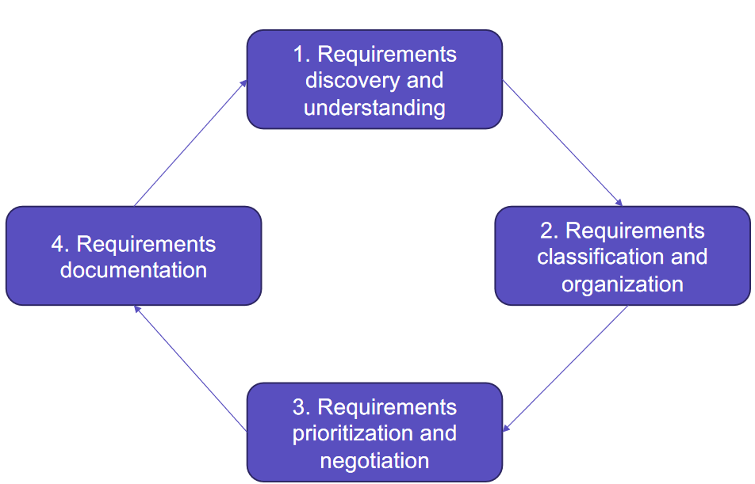
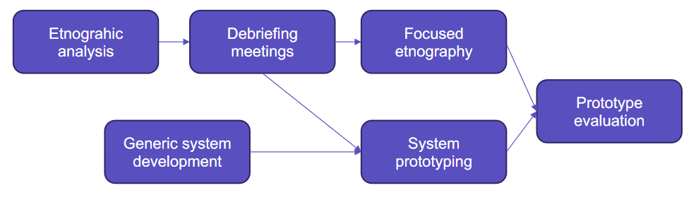

Requirements Elicitation and Managing change to requirements¶
Requirement Elicitation¶
Er svært da:
- Stakeholders ved ikke hvad de vil have
- Stakeholders bruger deres eget sprog og implicit viden
- Forskellige stakeholders med diverse eller modstridende requirements
- Politik
- Økonomisk og business miljø er dynamisk

Teknikker¶
Interview
- Lukkede interviews
- Predefinerede spørgsmål
- Åbne intervies
- Ingen predefieret agenda
Observation / Ethnography
- Se folk gøre deres arbejde
- Se hvordan arbejdet virkeligt udføres
- Requirements gennem samarbejde og awareness
- Forstå eksisterende systemer

Stories og Scenarier
Nemmere at relatere real-life eksempler end abstrakte beskrivelser
Requirements Ændringer¶
I Waterfall bliver ændringer approved af en project manager eller en styringsgruppe
- Dog ofte ikke gjort i waterfall
I agilt kan kun Product owner approve changes ved at opdatere product backlog
Reducer Cost ved Ændringer¶
Change Anticipation
Eksempelvis ved brug af prototyper som kan vise key features til kunden
Change Tolerance
Eksempelvis via inkrementiel udvilking
Prototyper¶
Kan bruges til at validate fra brugere at del af løsningen er "fit for use"
- Bruges i tidlig fase til at prøve design muligheder eller lære mere om problemet
- Kan give brugere nye ideer til requirements
Configuration Management¶
Faktorer ved ændringer i systemet
- Konsekvens ved ikke at lave ændring
- Hvis ændring er associeret med system fejl, skal seriøsiteten af fejlen vurderes.
- Fordele ved ændringen
- Vil det være til fordel fore mange brugere eller kun enkelte?
- Antal brugerer påvirket af ændringen
- Hvis kun få brugere bliver affected er det måske lav prioritet
- Cost ved at lave ændringen
- Hvis ændringen påvirker mange system komponenter, og derfor større chance for nye bugs
- Eller ændringen tager lang lang tid
- Product release cycle
- Er der lige udgivet nyt release er det måske bedre at vente til nææste release
Version Management¶
Eksempelvis vha. Git
- Version and release identification
- Managed versioner assignes identifiers når de submittes til systemet
- Storage Management
- VM holder delta'er (list of diferences) for at reduce storage
- Change history
- Alle ændringer i systemet er recorded og listed
- Independant developement
- VM lader udviklere arbejde på samme komponent på samme tid.
Last update: January 22, 2020